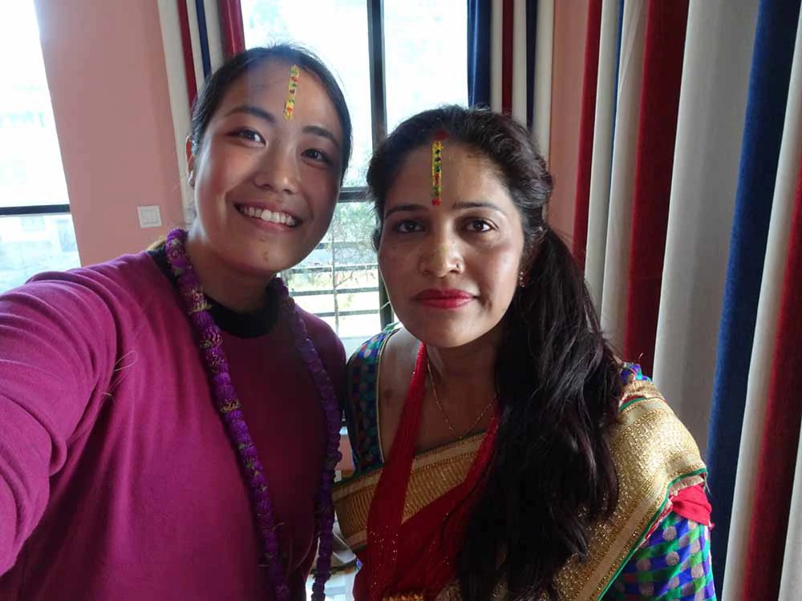
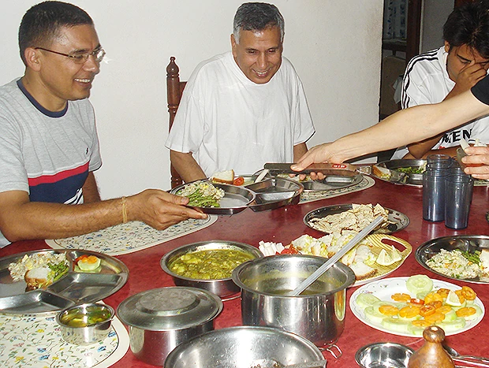
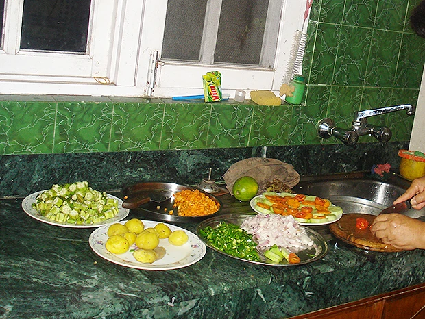
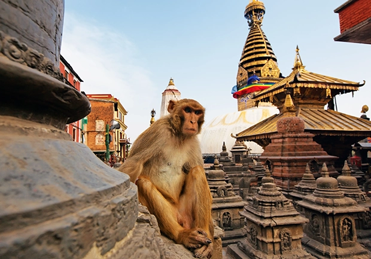

NEPAL カトマンズ・ホームステイ
ヒマラヤのふもとで
英語を学ぶ
多様な文化が交わる国で、一人ひとりのレベルに合わせた個人レッスン。生活の中で英語に触れながら、ホームステイ先のリズムに慣れていく日々を、無理のないペースで重ねていける環境です。
- 異文化体験
- 個人レッスン
- 24時間日本語サポート
ネパール留学について
ネパール留学を検討されている方のなかには、「英語を学びながら、現地の暮らしにも触れたい」「短期間でも意味のある滞在にしたい」という方が多くいらっしゃいます。Beインターナショナルでは、カトマンズでのホームステイと、担当教師によるマンツーマン英語レッスンを基本としたプログラムを22年以上運営してきました。ほとんどの方がお一人でのご参加です。
ヒマラヤのふもとに位置するカトマンズでは、異文化との出会いや、英語が学校教育のなかで使われる環境など、ネパールならではの学びがあります。短期から長期まで日数を選べ、現地受入団体 ICEDC が24時間日本語でサポートいたします。
費用の目安は7日間92,000円から。短期参加が多いのもネパール留学の特徴のひとつです。料金（ネパール）、ご出発までの流れ、参加者の声もあわせてご覧ください。
ネパールという国
インドと中国（チベット）の間に位置する内陸国です。インド文化とチベット文化の双方の影響を受け、民族・言語・宗教の多様性に富んだ社会が広がっています。
公用語のネパール語に加え、英語が通じる場面も多く、日常生活や旅の中でも英語に触れやすい環境です。
東西に連なるヒマラヤ山脈、点在する世界遺産、高原と盆地が織りなす多彩な風景——滞在スタイルに応じて、自然と文化の奥行きを感じることができます。ストゥーパの周りを巡る祈りの風景や、路地に祀られた神々など、信仰が暮らしのすぐそばに息づいているのも特徴です。人との出会いの中で、穏やかな温かさを感じる方も少なくありません。カントリーサイドへ足を延ばせば、伝統文化が今も残る村々の景色に触れる機会もあります。
一人旅でも、自分のペースでゆっくり歩いてみることで、ガイドブックには載っていない小さな発見や出会いにつながることがあります。
ビザが必要（インターネットで取得）
ビザ取得は、ネパールビザオンライン申請で手続きできます。
料金は、15日間30US$、30日間50US$、90日間125US$です。
ネパール入国日の15日前から申請できます。それ以前の申請は、データの保存期間が15日間なので消去されます。
※パスポートはネパール入国時点で６ヶ月以上の残存期間が必要です。
ホームステイ先地域の治安
皆様にホームステイをしていただく場所は、これまでテロなどが一度も起きたことのない安全な住宅街を選出しております。その為、これまで弊社のお客様はもちろんのこと、ホストファミリーにおいてもテロに巻き込まれたことはございませんのでご安心くださいませ。
ただし、現地においては、盗難等も含め、「自分の身は自分で守る」という自覚を持ち、十分ご注意の上、行動いただきますよう、お願い申し上げます。
ネパールの安全情報は、外務省 海外安全ホームページでご確認ください。

ネパールの英語教育事情
ネパールでは英語は単なる外国語ではなく、学校教育の中で日常的に使われています。就学前から英語の読み書きが始まり、小学校では他の教科を学ぶための言語としても使われる——日本とは大きく異なる環境です。
「なぜネパール人は英語を話せるのか？」については、こちらの記事で詳しく解説しています。
この土地ならではの体験
路地に漂うスパイスとお香のにおい、朝に響くお寺の鐘、市場でこぼれる笑い声。カトマンズでは、神様の名前が「ありがとう」や「またね」の中にさらりと溶けていて、暮らしと祈りの境目があってないようなものです。 ホームステイの朝は、ホストマザーのチャイで始まります。夜の食卓に並ぶのはダルバート（豆のスープ、ご飯、タルカリ＝副菜）。手で混ぜながら、その日見かけた街のこと、家族のこと、日本のこと。共通語は英語で、レッスンでは出てこない言い回しや相づちが、ごはんと一緒に体にすっと入ってきます。見慣れない習慣にひとつ触れるたびに、言葉も自分も少しずつ変わっていく。そういう時間が、ここにはあります。
-
異文化体験
お寺へお参り、カオスな街中、停電——生活のリズムも習慣も違う。最初は戸惑うことばかりですが、繰り返すうちに『そういうもんなんだ』に変わっていきます。路地裏の雑貨屋との日々の会話、市場で顔を覚えてもらうこと、祭りに参加する。そうした街での関係が積み重なることで、短い滞在でも帰国後も輝いて見える体験になっていきます。
-
地域とのつながり
興味や関心に応じて、子どもとや地域と交流ができるボランティアに関わることもできます。日本語教師、社会福祉施設でのサポート、地域の環境保全活動など、さまざまな場面があります。希望とスケジュールに合わせて組み合わせてください。こうした活動を通じて、カトマンズの地域コミュニティの一員として、日常を深く知ることができます。
ホームステイ
参加費用には、個人レッスン料に加え、ホームステイでの滞在費と、ホームステイ先での毎日3食の家庭料理が含まれます。お部屋まわりや生活習慣は家庭ごとに違います。初日から無理に慣れようとしなくて大丈夫です。日々小さなコミュニケーションを重ねることで、安心して過ごせる空気が生まれてきます。アレルギーがある場合は必ずお伝えいただければと思います。
ホームステイ先の一例
下記は、ホームステイ先の一例です。家の大きさ・日当たり・設備は、家庭によってさまざまです。ご出発までの流れも併せてご覧ください。
お部屋
個室に寝具・机・いすが用意されています。


食事
ネパールの日常食はダルバート・タルカリになります。「ダル」とは豆のスープ、「バート」は炊いたご飯、「タルカリ」とはカレー味の野菜料理のことです。もちろん野菜だけではなく、魚や、鶏肉、子羊肉、ヤギ肉などを食べます。ネパールでは、ヒンズー教の教えにより、牛は神聖な動物のため、牛肉は食べません。
フォークやスプーンなどは使わず右手で食べます。


写真はホームステイ先・食事の一例です。家庭によって家の様子やメニューは異なります。
個人レッスンと、日々の目安
全コース、担当の先生による個人レッスンとなります。1日あたりのレッスン時間は4時間です。
下のタイムライン目安です。実際のスケジュールにより異なります。
英語教師について、欠席と振替、レッスン内容
英語教師について
ネパール人の英語教師が、週5回・1日4時間の個人レッスンを行います。学校で英語を教えている現役の教員のため、学校終了後15時ごろからレッスンを始めます。万が一合わない場合は、別の先生への交代も可能です。
レッスンの欠席・振替
- 出発日の10日前までに、一部レッスンの欠席が事前に分かっている場合は、送金手数料を差し引いたうえで、該当レッスン料を返金いたします。お申込み時点で欠席が確定している場合は、できるだけ早めにお申し出ください。
- 渡航後は、レッスン実施日の前日（月曜日の欠席は金曜日）までに現地受入団体へご連絡いただいた場合に限り、別日への振替が可能です。振替レッスンを受講されない場合は、振替受講の権利を放棄したものとみなし、当該レッスンの実施および返金は行いません。
- 当日の欠席連絡については、振替・返金ともに対応いたしかねます。また、振替レッスンを欠席された場合も同様の扱いとなります。
英語レッスンについて
レッスンでは、実際のコミュニケーションに役立つ力の習得を目的に、コミュニケーション力・リスニング力・語彙力の向上を図ります。あわせて、ライティング力・リーディング力・文法力の強化にも取り組みます。
特に、日本人が苦手としやすいスピーキングに重点を置き、デモンストレーションや社会情勢などのトピックを用いたディスカッション、リスニングアクティビティ、発音練習を行います。
ライティングについては、毎日宿題に取り組んでいただき、次回のレッスンで教師が添削・フィードバックを行います。
なお、レッスン内容についてご希望がございましたら、個別のニーズに合わせて対応可能ですので、お気軽にお申し付けください。
レッスンが入っていない時間帯は ボランティア活動 への参加も可能です。
ボランティア・社会との接点
ネパール ボランティアとして、学校での日本語教室や地域の福祉・環境保全などに関わることができます。希望者のみ、レッスンと両立できる範囲でスケジュールに応じてお申し出いただけます。英語学習と並行して、カトマンズの地域コミュニティの一員として暮らしを深める時間にもなります。活動内容や日程は希望に合わせて組み合わせられます。往復の交通費など、料金に含まない部分は料金の内訳をご確認ください。
参加費用の例
ネパールは短期から長期まで、さまざまな日数のコースをご用意しています。まず、費用の目安となる例を以下にご紹介します。詳しくは料金（ネパール）をご覧ください。
1週間前後
7日間
92,000円
約2週間
12日間
136,500円
現地サポート（ICEDC）
ネパールの現地受入団体は、International Culture Exchange and Development Center（ICEDC）です。到着後の不安や体調の相談など、英語に不安があっても、日本語で生活面を一つひとつ確認しながら対応させていただきます。
International Culture Exchange and Development Center
現地受入団体は、International Culture Exchange and Development Center（略称 ICEDC）です。
プラタープ・チャトゥクリ氏が日本語でサポートにあたります。愛知県の名城大学博士課程に留学された経験があり、日本語は問題なく話せますので、小さなことでも、遠慮なくご相談ください。
24時間の現地サポート（日本語可）
現地では、必要に応じて24時間のサポートを行います。何かあれば、遠慮なくお申し出ください。


参加者レポート（抜粋）
直近のネパール参加に基づくレポートから、1日の流れとボランティアの感想を抜粋しています。
鈴木成さま（2025年7〜8月ご参加）— 1日の流れと活動

起床後はホストファミリーと一緒に朝食。午前は、日本語教師のボランティア。昼食のあと、英語の個人レッスン。午後は観光や、ホストの息子さんと過ごしながら街を歩き、夕食、夜の英語の時間、という日もありました。
ボランティアでは、一校舎で日本の文化や漢字を教え、生徒の皆さんと歌を歌ったり、僕が読んだ本に出てきた校長先生と実際にお話しできました。
現地の言葉に触れる
ネパール語は公用語の一つで、日本語と語順が近い面もあり、短いフレーズから入りやすい方がいらっしゃいます。英語とあわせて挨拶をいくつか覚えておくと、店先やホームステイ先での会話の糸口にもなります。
| 日本語 | ネパール語 | 読み方 | 使う場面 |
|---|---|---|---|
| こんにちは | नमस्ते | ナマステ | 基本の挨拶 |
| ありがとう | धन्यवाद | ダンニャバード | お礼 |
| おいしいです | मिठो छ | ミト チャ | 食事 |
| 大丈夫です | ठीक छ | ティーク チャ | 日常会話 |
| また来ます | फेरि आउँछु | フェリ アウンチュ | 別れ際 |